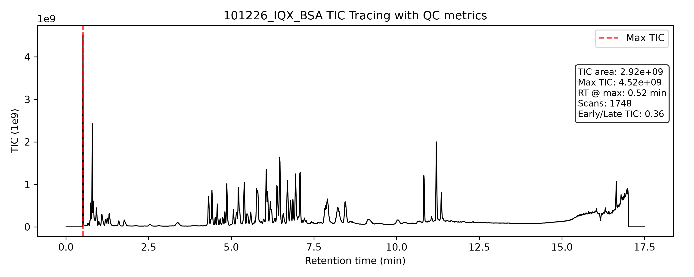
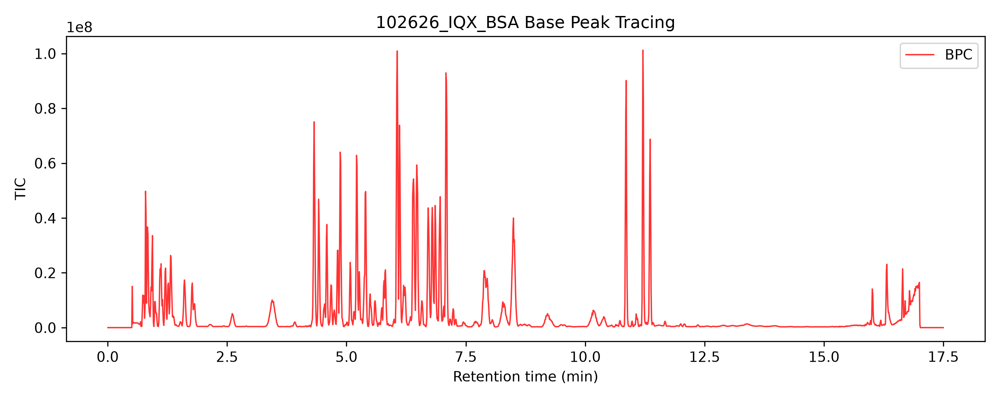
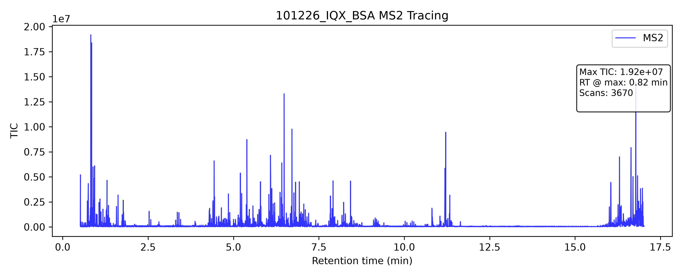
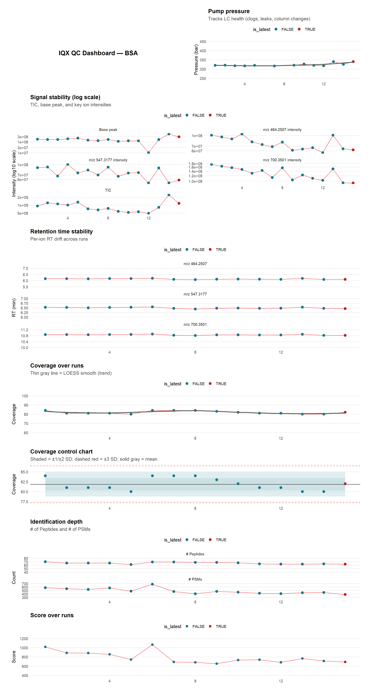
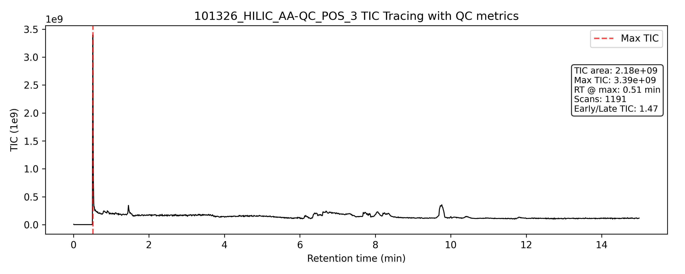
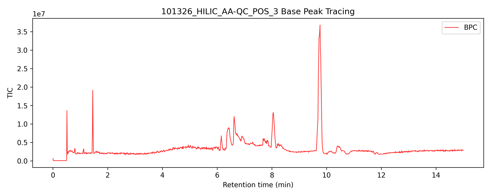
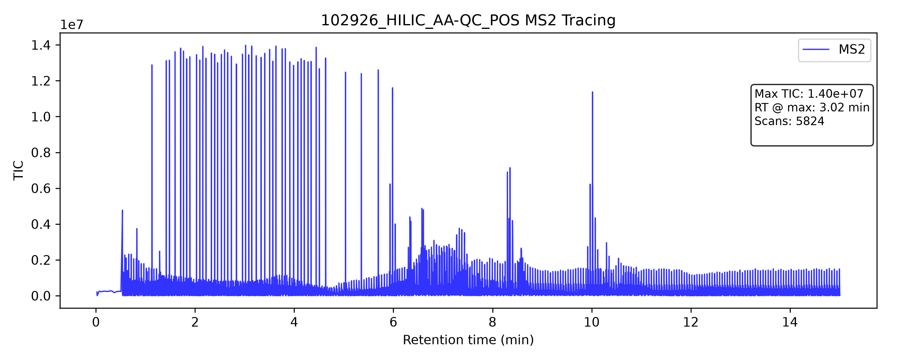

IQ-X – QC Dashboard
← Back to instrument list
Metabolomics - Reverse Phase Chromatography
Latest BSA TIC LC Chromatogram

Latest BSA Base Peak Chromatogram

Latest BSA MS2 Chromatogram

Metabolomics RP QC Timecourse
Download full QC report (PDF)

Metabolomics - HILIC Chromatography
Latest TIC HILIC Chromatogram

Latest Base Peak HILIC Chromatogram

Latest MS2 HILIC Chromatogram

Metabolomics HILIC QC Timecourse
Download full QC report (PDF)